|
Quick user introduction to SPOD |
|
Table of contents
2 Social Platform for Open Data
3.1.1 Show all users’ activities
3.1.2 Show only friends’ activities
3.2.4 Split view with additional information
4 Dataset visualisation: Controllet
4.1 Visualisation and discussion on datasets
5.1 Create a new co-creation room
5.3.1 Invitation to co-creation room
5.3.3 MODE MENU: Cocreation room
7.2 Video instructions on YouTube
The Social Platform for Open Data (SPOD) enables social interactions among citizens around open datasets coming from different sources (dataset providers).
Social features
A joint authentication mechanism allows a user to connect to both the Social Platform on Open data (SPOD) and the Transparency-Enhancing Tools (TET)
SPOD is a social platform and, then, enables the traditional social features among users. A user can write a status, can join ongoing discussions, comment and like others’ status/comments. As in social networks, we can establish friendship with other users, chat with them and see what they are doing.
But SPOD also offers some new features like attaching visualization of datasets (called datalets) to the comments, advanced “Public rooms” for the discussion (with support to the navigation and orientation), a “Private space” where each one can practice and build privately datalets, and a collaborative group where data can be co-created.
When you enter, you find yourself into the “What’s new” page which shows what the other SPOD users are currently doing, what public rooms are currently being updated, display updates about your friends, and (on the left) it shows synthetic information about the status of the SPOD, some help video and Tweets from relevant sources.
An unauthenticated user can access the home page of Social Platform for Open Data (SPOD), named “Open Wall”, showing some info about SPOD.

Once logged in, you can see your “What’s new” page and can see the recent social activities taking place on SPOD platform.
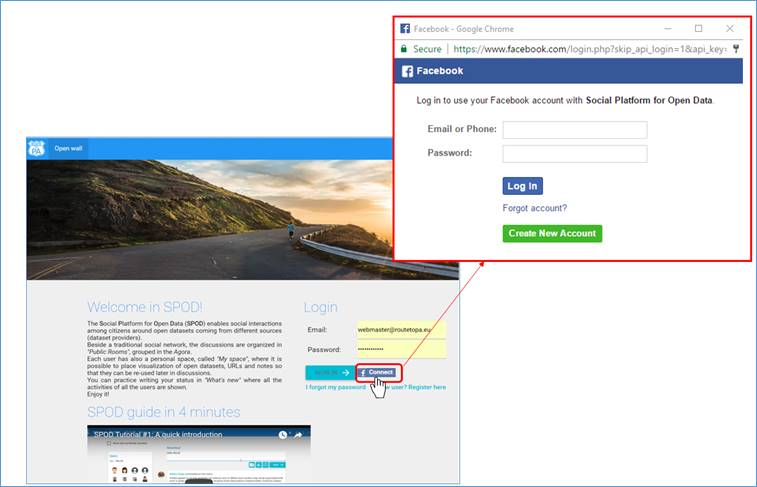
Figure 1: “What’s new” page in SPOD with custom widgets (Users, Agora Activities, SPOD help and Tweets) on the left side
Once logged in, the main menu navigation panel, on the top of your home page, will allow selecting the main features of the SPOD platform that will be described in the following sections. A Help context can you explain with more details all the features in SPOD, you can click on 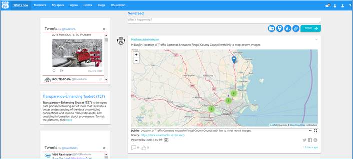 button on the top navigation right corner.
3.1 What’s new
This page shows both all the activities (e.g. posts, likes, photos etc…) to everybody or only the friends. On the left side, the administrator can add custom and configurable widgets (e.g. Tweets, Agora Activities, SPOD Help RSS feeds, Static content, etc.…)
3.1.1 Show all users’ activities
“What’s new” page shows all the activities (e.g. posts, likes, photos etc…) to everybody chronologically ordered even for users that are not my friends and it provides a switch between the activities of all the users and only the friends in the network, click on button, named “Show only my friends’ activities”.
Choose to attach a Datalet to a comment
By Datalet button (circled in Figure.) near the post creation control, you can attach to your comment/post a new Datalet. Everyone, even without technical expertise, can create and share visualisation of a chosen dataset with few simply steps using the wizard that assists you step-by-step, through the creation (or modification) of a Datalet.
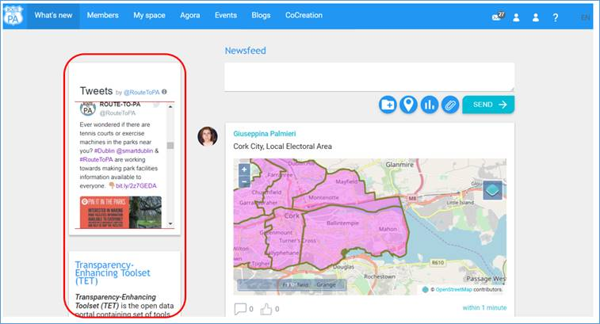
Datalets coming from "My Space"
You can also re-use the Datalets that you placed in "My Space". By clicking on the button shown, a pop-up shows all the existing Datalets that you can choose from.


3.1.2 Show only friends’ activities
Only all friends’ activities will be shown and the following list of available features:
o Share a post
o Upload a media file
o Import a link or data visualisation from “My space” page
o Section for change the user profile
Figure 6: This page shows only users’ activities Agora
3.2 Agora
Agora is where each user can create a “Public room” to start a new discussion/debate that is open to all the users. The tile of each Public Room shows a synthetic visualisation of its discussion by using colour, height and width as visual metaphors. The “Agora” shows the following characteristics:
· Level of discussion: it means that a “Public room” can have a wide discussion (defined as a discussion where many datasets are used) or not, and can have a deep discussion (i.e. one that has many comments) or not.
· Popularity: how popular is this public room in the SPOD? It depends on how many views has received in total, with respect to the others. It can be a hot room, something where many are viewing or a cold room, where not many are interested
· Recency: we want to know which was commented more recently
Agora shows a tile representation for showing up “rooms” as a map (see screenshot below).

3.2.1 Create a Public Room
To create a new room, just press the big  (Add)
button in right bottom corner of the screen, and insert the subject and a brief
description of the room (e.g., Subject, Body). If you don’t see the big
(Add)
button in right bottom corner of the screen, and insert the subject and a brief
description of the room (e.g., Subject, Body). If you don’t see the big  button
it is because the administrator has chosen to configure SPOD so that only the
moderators can do that.
button
it is because the administrator has chosen to configure SPOD so that only the
moderators can do that.
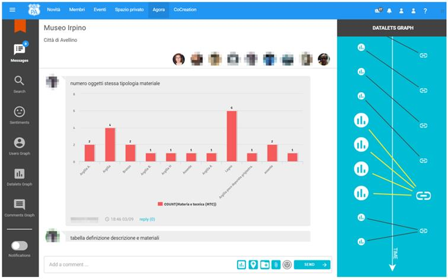
Figure 7: Create a Public Room
3.2.2 Access Public room
On top left side, click on button to display all “Public room”, created by the user.
“My Public Room” menu (on the top of left side) will show all the discussion rooms created by the current user:
Figure 8: All discussion rooms created by user in the “Agora”
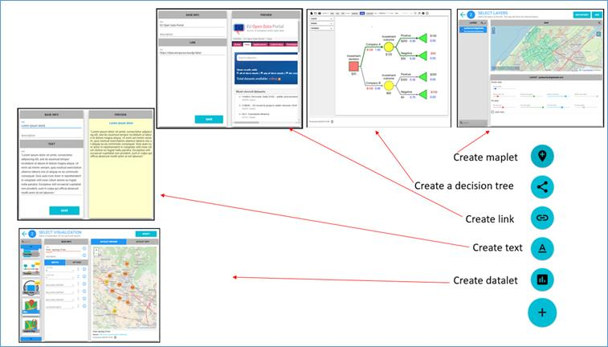
Figure 12: Room attributes: full red (the “hottest” color) correspond to the Public Room with the highest number of views, blue (the “coldest” color) with the Public Room with the minimum number of views.
3.2.3 Public Room
Click on a specific of public discussion room (see Figure 13) and move back up in the “Agora” when click on colored border of the “Public Room” and a set of features to enrich a contribution will be described in the following sections.
Figure 13: a first overview of a “Public Room” with datalet
List of all features available in a public room:
· Import from “My space” (see screenshot below (1) )
· Add a datalet (see screenshot below (2) )
· Attach an image (see screenshot below (3) )
· Sentiment (see screenshot below (4) )

3.2.3.1 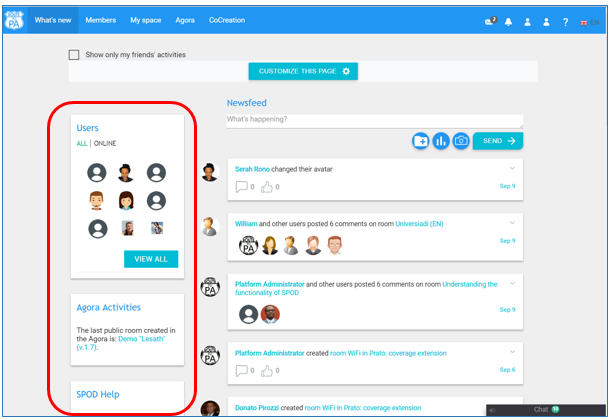Import from “My space”
Choose data visualisation or link before previously created from "My space” and send a post in "Public Room".
3.2.3.2 Add a new or suggested dataset
Click on 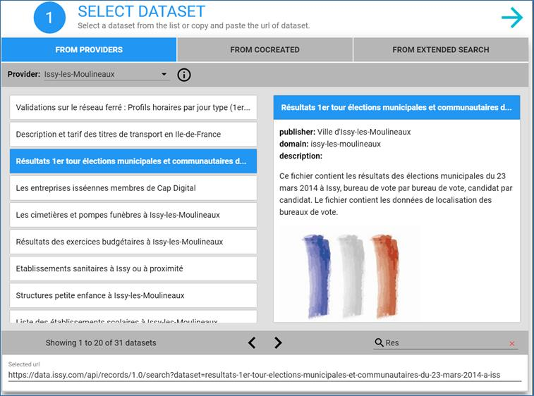 to add a visualization of a new datalet, choosing a new datasets or a “suggested” datasets (all dataset in yellow highlighted)
3.2.3.3 Upload image
Click on button to add an image in a public discussion.
3.2.3.4 Sentiment indicators for a post
You can give your opinion with dis/agree (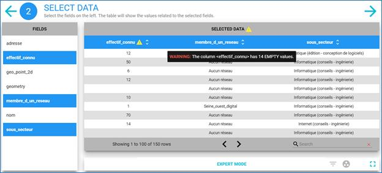/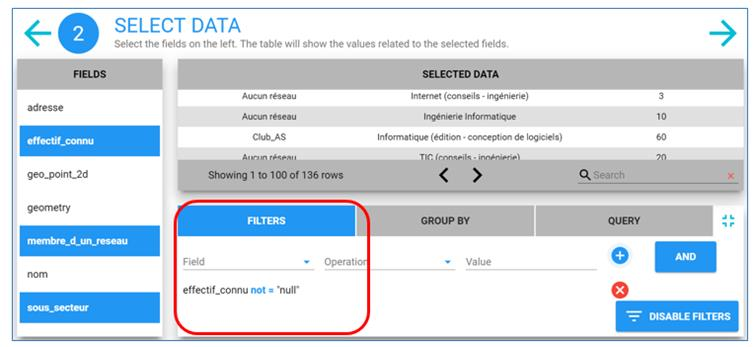)
or neutral opinion ( )
in a post.
)
in a post.
3.2.3.5 Time-dependent thread-like visualisation of comments
The threaded chat has a maximum of three nested level. The number of nested levels is limited to avoid straying too far from the main topic and make less readable the conversation. Every time you add a new post in the chat, you can express you opinion by selecting from the Opinion Button:
- Neutral(Blue color node in the graph)
- Agree(Green color node in the graph)
- Desagree(Red color node in the graph)
3.2.4 Split view with additional information
Click on  button, a split view shows a threaded chat, on the left side, and a
synchronized comments based graph (e.g., comments-based graph) is showed on the
right side (see Figure 14).
button, a split view shows a threaded chat, on the left side, and a
synchronized comments based graph (e.g., comments-based graph) is showed on the
right side (see Figure 14).
3.2.5 Comments graph
Comments Graph is tree of the comments, where each node represents a comment and the edges the parent-child relations. The dimension of a node is directly proportional to the numbers of nested comments, rooted in the node. The larger the node, the more comments are present below it in the discussion. The color can be green, red or blue, depending on the opinion. If you bring the mouse over a node (no click) you can read the comment of the node, and if you click the chat on the left will move and highlight the corresponding comment.
Click on  , to see a Comments-based graph (see Figure 14)
, to see a Comments-based graph (see Figure 14)
Figure 14: A Comment-based graph and a mouse over shows the comments
Interactive graph
Any graph is interactive, you can adjust the nodes as you like, by clicking and dragging the nodes. Any graph is informative: with mouse over the node, related information is shown on top right. Any graph is synchronized: by clicking on a node in the graph you can see on the left the corresponding content in the threaded chat.
Datalet sharing
You can use the Datalet button (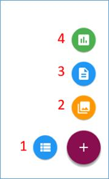) to create and post a new visualization of datasets at every level of the threaded chat. During this step, you can easily select one of the suggested datasets (from the creator) or add a new one.
3.2.5.1 Datalets graph
Datalets Graph is graph of datalets, where each node represents a datalet, and edges join datalet that uses the same dataset (but possibly with a different visualization). The dimension of a node is directly proportional to the numbers of nested comments, rooted in the node. The larger the node, the more comments are present below it in the discussion. If you bring the mouse over a node (no click) you can read the comment of the node and if you click the chat on the left will move and highlight the corresponding comment.
Click on 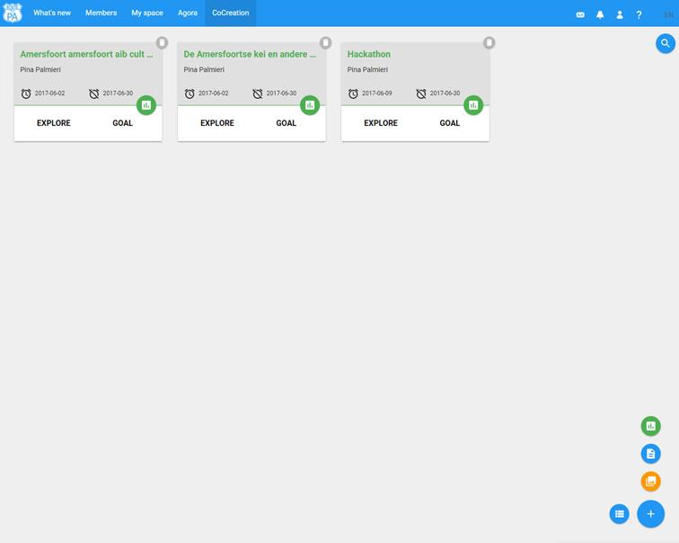 button, to see a Datalets-based graph (see Figure 15)

Figure 15: A Datalets-based graph
3.2.5.2 Users graph
Users Graph is the graph of users, where each node represents a user that is participating in the discussion, and an edge joins to users that interacted (one answered a comment of the other). The thickness of the edge is directly proportional to the number of interactions. If you bring the mouse over a node (no click) you can read user's first comment.
Click on 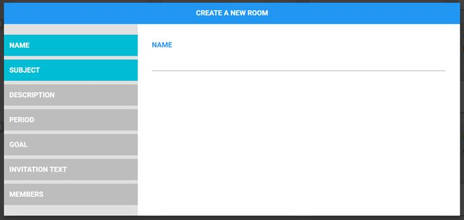 button, to see a User-based graph (see Figure 16)
Figure 16: User-based graph
3.2.5.3 Opinions graph
Opinions Graph is the comments graph with the all the green (agree) adjacent comments are emphasized and grouped together. In this way, all the comments that seem to share a position are highlighted.
You can give your opinion with dis/agree (,) or neutral opinion (), and different color (red, green or gray respectively) on the (left side) will be showed near user icon in the threaded chat and synchronized comments-based graph is showed on the right side.

Figure 17: A threaded chat (on the left side) with comments with opinions and Opinions-based graph (on the right side) (e-g. dis/agree or neutral opinions)
3.3 My space
My space is the place where each user can manage datalets, text and link in a personal area, as a reminder or for later use within a post (in What's new or in the Public rooms of the Agora).
A context helper, click on  button,
is available on the top menu on right corner.
button,
is available on the top menu on right corner.
“My space” page is a personal/private space for personal conversations.
The “My” space organizes and archives a list of item namely, text notes, datalets (i.e. visualization of datasets), URL (web pages) etc. for additional discussion.
A first glance at the “My space” at the start up.
Clicking on the 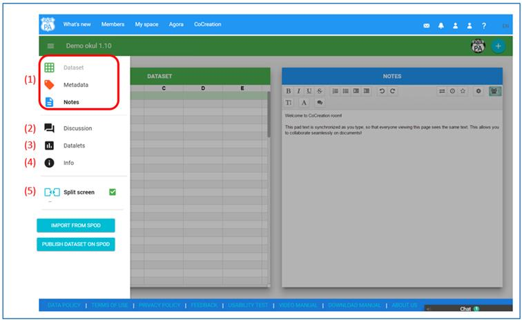 button, all features will be shown (see Figure 19)

Figure 19: “My space” page shows all features
Each content is placed in a "card". You can add in a card a URL, a datalet (visualization of a dataset) or plain text, simply by clicking on the big "+" button in the right bottom corner. In order to display the content of a card, just click on the blue button in the middle of the card. Each card has also a title (in black background) and a comment (below the title). For each card, on the top, you can modify (pencil icon) or delete it (basket) The layout of the cards follows the temporal order (most recent first). You can create different types of cards:
· Link card (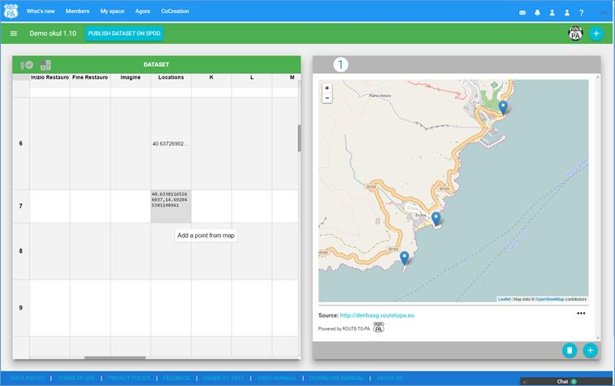 button)
· Text card (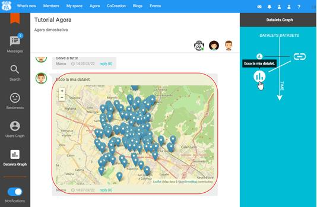 button)
·
Open Data visualization ( button)
button)
To display content just click on the blue button in the middle of the card. When a user tries to view its own datalets in their private space, SPOD does not contacts the actual data provider but retrieves the data from its own database. This allows for a great speed improvement and in a better user experience.
SPOD allows the creation of visualisations from Open Data (OD) stored on any external OD platform. In particular, SPOD platform supports CKAN/TET, OpenDataSoft platforms as well as other external sources.
SPOD supports the creation of visualisation from any other external dataset with the copy and paste of its URL. Users creates visualisations through a step by step usable Wizard named Controllet.
4.1 Visualisation and discussion on datasets
A new discussion can start on the selected dataset and visualise a specific chart starting a discussion on Open Data. To post a new chart and a comment, e.g., in “My friends’ activities” page, by clicking on the “What’s happing” text:
The 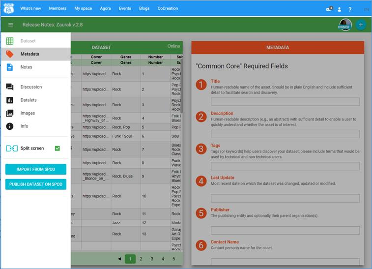 button for SPOD appears.

Clicking on  button, the following section “Dataset
source” shows how to import many datasets using standard CKAN web API and
visualize them.
button, the following section “Dataset
source” shows how to import many datasets using standard CKAN web API and
visualize them.
A wizard allows to add data visualization of your chosen chart.

Figure 17: Controllet: search for provider or dataset, clicking on the search, named Provider, on top of the left side or search for dataset, clicking on the search on the bottom of the right side.
Figure 18: Select a chart on the left side and details are available on the right side in the “DATALET INFO” section
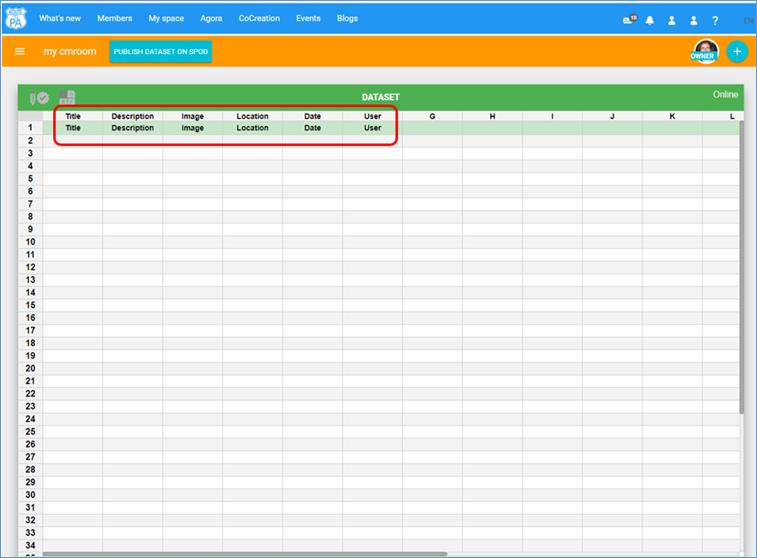
Figure 19: “INPUT” section to fill in and a preview of the dataset is available on right side
Figure 20: “INPUT” section to fill in and a preview of the dataset is available on right side
5 Co-creation Room
A new collaborative space to guide the user to constructive discussions within a small, private (by invitation) group (named Cocreation knowledge room) and to produce or create new datasets (named Cocreation data room).
The Cocreation knowledge room ( button) includes tools specifically designed for small groups such as
cocreating a template document for each of the three phases (e.g Explore,
Ideas, Outcome) and annotation via post-it of the datalets to be discussed
(with synchronous notification for real-time discussions).
button) includes tools specifically designed for small groups such as
cocreating a template document for each of the three phases (e.g Explore,
Ideas, Outcome) and annotation via post-it of the datalets to be discussed
(with synchronous notification for real-time discussions).
The Cocreation data room ( button) allows the users produce further datasets by either manipulating
existing ones on the platform (helped with an import feature in cocreation process)
or creating a new dataset (cocreation data process) that can be shared with
other users creating new datalets for starting discussion in rooms of Agora.
Users can discuss and add "likes" on produced datasets.
button) allows the users produce further datasets by either manipulating
existing ones on the platform (helped with an import feature in cocreation process)
or creating a new dataset (cocreation data process) that can be shared with
other users creating new datalets for starting discussion in rooms of Agora.
Users can discuss and add "likes" on produced datasets.
Figure 30: All features: (1) View all datasets; (2) Add a cocreation knowledge room; (3) Add a cocreation data room.
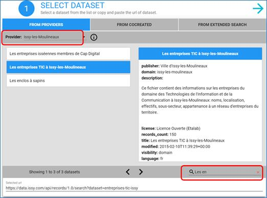
Figure 31: Create a Data or Knowledge room, take a look at all datasets
5.1 Create a new co-creation room
On the bottom on the right-bottom corner click on 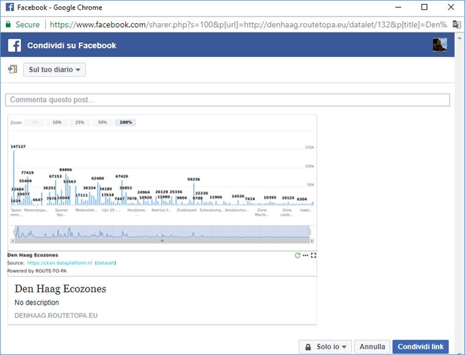 button to fill out the details of the room:
· Name of the Room
· Subject
· Description
· Period
· Goal
· Invitation test
· Members: suggest e-mail address of a use

When you enter on the Co-creation room, on
the left upper corner, click on the  button to know the details of the created.
button to know the details of the created.
Click on “INVITE NEW MEMBERS” button to invite other users in this room. Only the creator of the room can invite other users to participate in a “Co-creation room”.

5.2 View all dataset
“View all dataset” ( button) is a feature to show the datasets created and exported by groups in the cocreation data rooms, that allow to see the dataset, the notes and the link to the dataset and more.

In the “TOOLS” column, on the right side, the following features are available:
· Open ( button): every time you add a new dataset in the Cocreation data room, you can see any dataset in the cocreation data room
· Downloads as CSV ( button): every time you add a new dataset in the Cocreation data room , you can download the dataset as CSV file
· Copy link (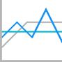 button): every time you add a new dataset in the Cocreation data room, you can copy and paste the address (URL) of the dataset
·
Downloads doc ( button): every time you add a new dataset in the Cocreation data
room, you can download the notes of the dataset as html file.
button): every time you add a new dataset in the Cocreation data
room, you can download the notes of the dataset as html file.
5.3 Cocreation Knowledge room
5.3.1 Invitation to co-creation room
An notification message, on the lower left side of the page, shows some invitations to join to specific room and clicking on the “CONFIRM TOO JOIN” link to accept the invite.
Now you can select an already created room with the accepted invite or create a new room. The accepted invite will allow to see the collaborative space of the created room. Click on the “Explore” to enter into the room.
Select a room and click on  button
to enter into the selected room. The selected room will show on the left side a
shared document where you can start to edit and on the right side a list of
datalets with the possibility of adding notes.
button
to enter into the selected room. The selected room will show on the left side a
shared document where you can start to edit and on the right side a list of
datalets with the possibility of adding notes.
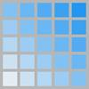
5.3.2 Mode menu
Click on button of the upper left corner to select:
· Data
· Co-Creation
· Tool (functionality will be available shortly)
You can click on “Data” or “Co-creation” room.

5.3.3 MODE MENU: Cocreation room
A collaborative space to guide user to constructive discussions within a small, private (by invitation) group. It includes tools specifically designed for small groups such as cocreating a template document for each of the three phases explore, ideas, outcome and annotation via post-it of the datalets to be discussed (with synchronous notification for real-time discussions).
Select “Co-creation” from “MODE” menu on the top left corner of the “Cocreation”:

When Co-creation is opened you can select a page (e.g., Explore, Ideas, Outcome) on the bottom bar navigation.
5.3.3.1 Explore page
On the left side, a collaborative space is ready to edit documents collaboratively in real-time and provides a list of features:
· Clear collaboration: it is possible to see changes being made by other users in real time and each participant is identified by a color and name
· Chat: a synchronous communication is available with other people who are using the document
· Recording Revisions: it is possible to save specific versions at any time. A time slider shows anyone the history of the shared document.
· Exporting: a document can be downloaded in plain text, HTML, Open Document, Microsoft Word or PDF format
List of features on the right side:
· User interface: enlarge, split the shared document or the datalet
· Delete a datalet
·
Add Notes ( )
)
·
Import from My Space ( ): import a datalet from the private
space of user (e.g., My space)
): import a datalet from the private
space of user (e.g., My space)

5.4 Cocreation data room
Cocreation data room is a collaborative, real-time spreadsheet; it combines the ease of authoring and multi-user editing of spreadsheet enriched with export/import csv files.
It allows citizens to collaborate on a spreadsheets over SPOD platform in realtime to create dataset with useful criteria for data validation, and to publish a dataset to share for further discussion in social collaboration tools in SPOD (e.g., in What’s New, Agora ).
Some functionalities:
· Create a New Sheet, Export CSV and Import CSV files, list of function (SUM, PRODUCT, AVG etc…).
· Collaboration on the same dataset with support of validation criteria: users can edit the same document at the same time. Everybody's changes are instantly reflected on all screens. Finally, the dataset will be publish it in a new provider, named SPOD provider available for Controllet to share it in social tools (e.g., Agora, What’s new).
· Each dataset can be authored providing also sources (in a shared text editor) and metadata
· When published, each dataset is accessible to build a datalet in the traditional ways (buttons in What’s new, Agora’s public rooms, etc.)
· Cocreation: a “View all dataset” new feature to show the datasets created and exported by groups in the cocreation data rooms, that allow to see the dataset, the notes and the link of the dataset and more..
Figure 32: Create a dataset with data validation (1), customize the user interface (2), social discussion (3), create notes, metadata for the dataset (4), add datalet (5), finally publish the dataset to make it available among providers of the Controllet, named SPOD provider (6).
In the following sections, SPOD platform visualizes some example of charts with open data datasets.
6.1 Bar chart

6.2 Column chart

6.3 Stacked column chart

6.4 Linechart

6.5 Pie chart

6.6 Areachart chart
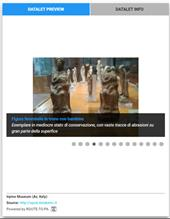
6.7 Bubble chart
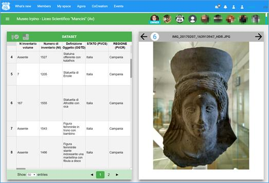
6.8 Heatmap

6.9 Scatter chart

6.10 Map

7.1 Manual easily accessible
Manual link is available, at the right bottom of the page in SPOD platform (see Figure 48).
7.2 Video instructions on YouTube
Video Manual link is available, at the right bottom of the page in SPOD platform (see below screenshots).

Figure 48: “Video Manual” and “Manual” on the right bottom of the page in SPOD platform:
Video Manual is a YouTube channel with videos to explain main functionalities in SPOD platform.
Figure 49: YouTube channel for SPOD platform
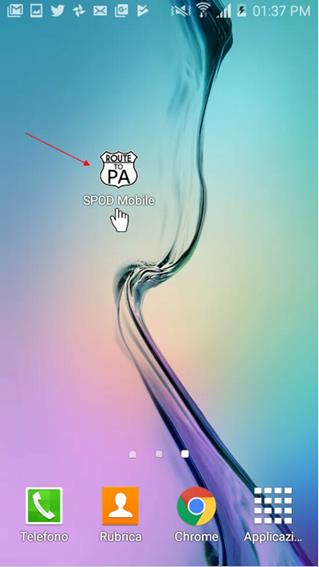
Figure 50: Videos for several features on the YouTube channel
7.3 Context-sensitive help
In each page (e.g., Agora etc… ), or in any widget of the UI (e.g, buttons etc..), a description is provided with detailed tooltips or a brief explanation that define precisely how to interact with the control/page in question.
The online help system in SPOD platform is available selecting 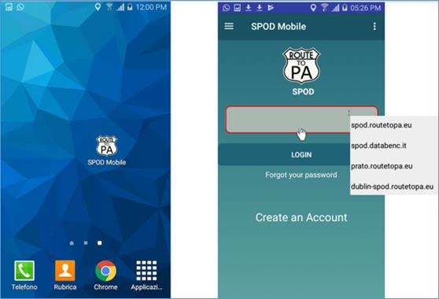 , the question mark button, and a small window will popup with a short explanation of the item you selected. The features will be present in following pages:
· Public Room
· Agora
· My space
· Open Wall
· What’s new
You can access SPOD platform on your computer through the following browsers:
· Google Chrome 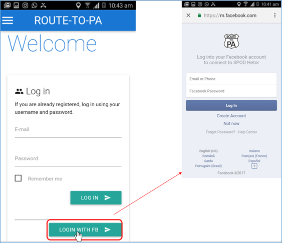
·
Firefox 
· Safari
·
Microsoft Edge
On the top right corner, a menu allows to select a language (e.g., EN, FR, IT, NL) and a SPOD platform is available in English, Italian, Dutch, and French.
Glossary
A list of technological terms and icon button that will be used in the SPOD platform
|
Button |
Technological Terms/ Name |
Where in SPOD |
Function or description |
|
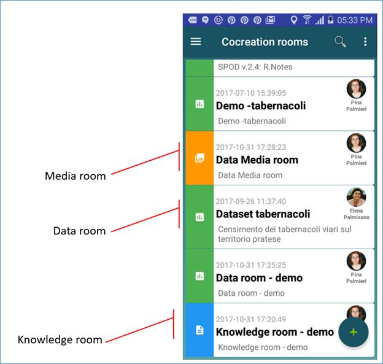 |
Datalet button |
|
Attach to a comment/post a new Datalet, with few simply steps using the wizard that assists step-by-step, through the creation (or modification) of a Datalet.
|
|
Open My space |
|
Import any datalet or web link from My space |
|
|
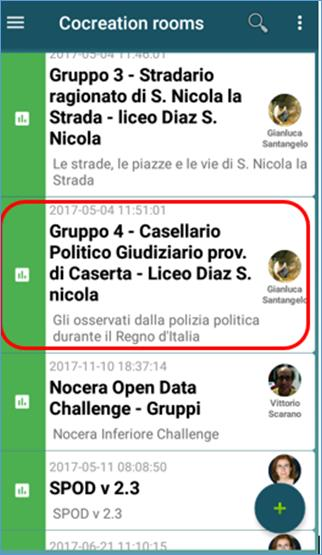 |
Upload an image |
|
Upload an image file |
|
|
Associated dataset provider |
In Open wall and in the Controllet |
A list of open data provider suggested by the administrator. |
|
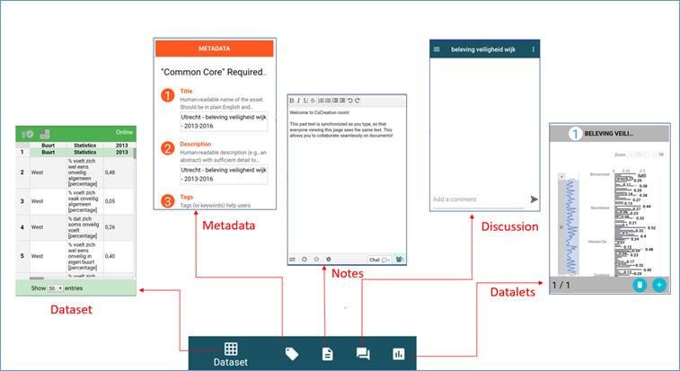 |
Open graph panel |
In Public Room |
Rooms are split vertically, on the left side there is a threaded chat (enabled for the use of open data) meanwhile on the right there is an area, dedicated to Graphs. |
|
|
SPOD Helper |
On top right corner of the Top Menu |
In the “Open Wall” page, SPOD Helper shows the manual on line for the platform; in “What’s new” page, explains how add and share a datalet, where an user can post a datalet in a comment; in “My space” page explains how create different types of cards (e.g., a text, link or datalet card), in “Agora” page is the place where each user can create a “Public room” to start a new discussion/debate that is open to all the users. |
|
Comments graph |
Public room |
Comments graph is tree of the comments, where each node represents a comment and the edges the parent-child relations. |
|
|
|
Datalets graph |
Public room |
Datalets graph is graph of datalets, where each node represents a datalet, and edges join datalet that uses the same dataset (but possibly with a different visualization). |
|
|
Users graph |
Public room |
Users graph is graph of users, where each node represents a user that is participating in the discussion, and an edge joins to users that interacted (one answered a comment of the other). |
|
Opinions graph |
Public room |
Opinions Graph is the comments graph with the all the green (agree) adjacent comments are emphasized and grouped together |
|
|
|
Add |
Agora and My space |
Add a new room or add a new card |
|
Link card |
My space |
Add a link in My space |
|
|
Text card |
My space |
Add notes in My space |
|
|
Open Data Visualization |
My space |
Preview of a card in My space |
|
|
|
Modify card |
My space |
Modify a card |
|
|
Delete card |
My space |
Delete a card |
|
|
Open My space |
Public room |
Import a link or notes from My space |
|
Upload an image |
Public room |
Upload an image in a post/comment |
|
|
|
Add datalet |
Public room |
Datalet button creates and posts a new visualization of datasets at every level of the threaded chat |
|
Upload an image |
Public room |
Upload an image in a posts a new visualization of datasets at every level of the threaded chat |
|
|
|
Opinion Button (Neutral) |
Public room |
Every time you add a new post in the chat, you can express you opinion by selecting from the Opinion Button: Neutral (Blue color node in the graph) |
|
|
Opinion Button (Agree) |
Public room |
Every time you add a new post in the chat, you can express you opinion by selecting from the Opinion Button: Agree (Blue color node in the graph) |
|
|
Opinion Button (Disagree) |
Public room |
Every time you add a new post in the chat, you can express you opinion by selecting from the Opinion Button: Disagree (Blue color node in the graph) |
|
Information Button |
Cocreation room |
You can take a look at all information (e.g., Owner, Subject, Description etc.) of a new created room |
|
|
|
Open Button |
Cocreation data room |
Every time you add a new dataset in the Cocreation data room, you can see any dataset in the cocreation room |
|
|
Download as CSV Button |
Cocreation data room |
Every time you add a new dataset in the Cocreation data room , you can download the dataset as CSV file |
|
|
Copy link Button |
Cocreation data room |
Every time you add a new dataset in the Cocreation data room, you can copy and paste the address (URL) of the dataset |
|
Download docs Button |
Cocreation data room |
Every time you add a new dataset in the Cocreation data room, you can download the notes of the dataset as html file |
|
|
|
View all dataset Button |
Cocreation room |
You can take a look at all datasets created in the Cocreation data room and published in the SPOD platform |
|
|
Add a Cocreation data room Button |
Cocreation room |
You can create a new Cocreation data room |
|
|
Add a Cocreation knowledge room Button |
Cocreation room |
You can create a new Cocreation knowledge room |